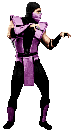
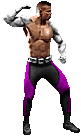

-
Johnny CageEarthrealm
Johnny Cage é um renomado ator de Hollywood que, devido ao seu talento nas artes marciais, foi recrutado para participar do torneio Mortal Kombat. Ele pertence ao Reino da Terra, que é constantemente ameaçado pelo malévolo Outworld. Johnny Cage é conhecido por seu estilo de luta único, habilidades acrobáticas e por sua atitude autoconfiante.
-
Noob SaibotNetherrealm
Noob Saibot, cujo nome verdadeiro é Bi-Han, era um membro do clã Lin Kuei e pertencia ao Reino da Terra. Ele foi assassinado por Scorpion durante o primeiro torneio Mortal Kombat. Após sua morte, Bi-Han foi ressuscitado por Quan Chi como um guerreiro das sombras e renasceu como Noob Saibot. Ele é um personagem sinistro e misterioso, conhecido por suas habilidades sombrias e ataques sorrateiros.
-
Baraka
 Outworld
OutworldBaraka é um guerreiro sanguinário que pertence ao Reino de Outworld. Ele é um membro da raça Tarkatan, conhecida por suas presas afiadas, garras mortais e resistência física. Baraka é um leal servo do imperador Shao Kahn e lidera as tropas de Outworld em suas invasões aos outros reinos, incluindo o Reino da Terra.
-
CryaxEarthrealm
Cyrax é um ciborgue que fazia parte do clã Lin Kuei, originalmente pertencente ao Reino da Terra. No entanto, durante uma fase em que o clã foi transformado em ciborgues, Cyrax foi programado para servir ao Reino de Outworld. Eventualmente, ele recupera sua consciência e luta contra seu controle, tornando-se um defensor do bem. Cyrax é habilidoso em combate corpo a corpo e possui armas e dispositivos tecnológicos avançados.
-
Sonya Blade
 Earthrealm
EarthrealmSonya Blade é uma agente das Forças Especiais dos Estados Unidos e uma das principais defensoras do Reino da Terra. Ela é uma guerreira habilidosa em combate corpo a corpo e especialista em artes marciais. Sonya está determinada a proteger seu reino dos perigos do Outworld e de outras ameaças. Ela é conhecida por sua coragem, força e determinação.
-
Raiden
 Earthrealm
EarthrealmRaiden é o Deus do Trovão e o protetor do Reino da Terra. Ele é um dos deuses anciões conhecidos como Elder Gods. Raiden é responsável por guiar os guerreiros da Terra em sua luta contra as forças do mal. Ele possui poderes elétricos e habilidades divinas. Raiden é um personagem sábio e poderoso, disposto a fazer qualquer coisa para proteger seu reino.
-
RainEdenia
Rain é um guerreiro do Reino de Edenia. Ele é um príncipe exilado que possui habilidades de manipulação da água. Rain é um personagem ambíguo, alternando entre lutar por seu reino e buscar seus próprios interesses. Ele é conhecido por sua personalidade arrogante e por seu estilo de luta fluido e elegante.
-
Shang Tsung
 Outworld
OutworldShang Tsung é um feiticeiro poderoso e um dos principais antagonistas da série Mortal Kombat. Ele é um habitante do Reino de Outworld e um servo leal do imperador Shao Kahn. Shang Tsung é conhecido por sua habilidade de absorver almas de seus oponentes, tornando-se mais poderoso. Ele é um estrategista astuto e manipulador.
-
Kitana
 Edenia
EdeniaKitana é uma princesa do Reino de Edenia, mas foi capturada e criada por Shao Kahn como sua filha adotiva. Ela é uma lutadora ágil e graciosa, especializada em artes marciais com leque. Kitana eventualmente descobre a verdade sobre sua origem e se torna uma aliada na luta contra Shao Kahn. Ela é conhecida por sua beleza e habilidades mortais.
-
Kano
 Earthrealm
EarthrealmKano é um mercenário australiano e um criminoso brutal. Ele é membro do infame sindicato do crime conhecido como Black Dragon. Kano é um personagem astuto e traiçoeiro, disposto a fazer qualquer coisa por dinheiro e poder. Ele não pertence a um reino específico, mas geralmente está envolvido em atividades ilegais no Reino da Terra e em outros reinos.
-
Scorpion
 Netherrealm
NetherrealmScorpion é um ninja vingativo do Reino Netherrealm. Seu nome verdadeiro é Hanzo Hasashi, e ele busca vingança contra Sub-Zero por ter assassinado sua família e clã. Scorpion é conhecido por suas habilidades com lanças de fogo e sua capacidade de conjurar chamas do inferno. Ele é um personagem popular, com sua história de redenção e busca por justiça.
-
Sub-Zero
 Earthrealm
EarthrealmSub-Zero é o título atribuído a dois irmãos do clã Lin Kuei: Bi-Han (o Sub-Zero original) e Kuai Liang (o Sub-Zero atual). Ambos pertencem ao Reino da Terra. Eles são habilidosos criomantes, capazes de controlar o gelo e usar suas habilidades para congelar e derrotar seus oponentes. Embora o Sub-Zero original tenha sido inicialmente um assassino, Kuai Liang se rebelou contra as ordens de seu clã e tornou-se um defensor do Reino da Terra.
-
SmokeEarthrealm
Smoke, cujo nome verdadeiro é Tomas Vrbada, é um ninja que pertenceu ao clã Lin Kuei. Ele foi um amigo próximo de Sub-Zero antes de ser transformado em um ciborgue, assim como Cyrax e Sektor. No entanto, Smoke recuperou sua humanidade e busca vingança contra os responsáveis por sua transformação. Ele tem habilidades de fumaça e pode se teleportar, tornando-o um lutador evasivo e imprevisível.
-
ReptileOutworld
Reptile é um guerreiro do Reino de Outworld e um leal servo de Shao Kahn. Ele pertence à raça Saurian e possui características reptilianas. Reptile é conhecido por sua agilidade, força sobre-humana e habilidades de camuflagem. Ele é um guarda-costas e espião, frequentemente usado por Shao Kahn para realizar suas missões sujas.
-
Jax BriggsEarthrealm
Jax Briggs é um soldado das Forças Especiais dos Estados Unidos e um defensor do Reino da Terra. Ele é conhecido por sua força física impressionante e por seus braços mecânicos poderosos, que ele recebeu como melhoramento cibernético. Jax luta contra as forças do mal para proteger seu reino e é um aliado próximo de Sonya Blade. Ele é um personagem corajoso e determinado.
-
Mileena
 Outworld
OutworldMileena é uma guerreira do Reino de Outworld e uma clone imperfeita de Kitana, criada por Shang Tsung e Shao Kahn. Ela possui uma aparência atraente, mas esconde uma boca cheia de dentes afiados. Mileena é conhecida por sua agilidade e suas habilidades mortais com suas Sai, armas em forma de gancho. Ela é uma personagem complexa, com uma personalidade instável e uma sede de poder intensa.
-
Sektor
 Earthrealm
EarthrealmSektor é um ciborgue do clã Lin Kuei que pertence ao Reino da Terra. Ele foi transformado em um ciborgue junto com Cyrax e Smoke como parte de uma iniciativa do clã. Sektor é conhecido por sua aparência vermelha metálica e suas habilidades tecnológicas avançadas. Ele é leal ao clã Lin Kuei e é um guerreiro implacável.
-
Liu Kang
 Earthrealm
EarthrealmLiu Kang é um dos heróis mais icônicos do Mortal Kombat e um campeão do Reino da Terra. Ele é um monge shaolin treinado nas artes marciais e é o protagonista principal da série. Liu Kang é conhecido por sua determinação, coragem e habilidades excepcionais em combate. Ele é frequentemente o escolhido para enfrentar os principais antagonistas e proteger seu reino.
-
Jade
 Edenia
EdeniaJade é uma guerreira do Reino de Edenia e uma aliada próxima de Kitana. Ela é conhecida por suas habilidades com bastão e seu estilo de luta gracioso. Jade é leal e corajosa, disposta a fazer qualquer coisa para proteger seu reino e seus amigos. Ela é uma personagem habilidosa em combate e muitas vezes desempenha um papel estratégico nas batalhas.
-
Sheeva
 Outworld
OutworldSheeva é uma guerreira shokan do Reino de Outworld. Ela é conhecida por sua aparência imponente, com quatro braços musculosos. Sheeva é uma lutadora poderosa e usa sua força bruta para esmagar seus oponentes. Ela é uma defensora leal de Shao Kahn e luta para aumentar o poder de seu reino.
-
Kung Lao
 Earthrealm
EarthrealmKung Lao é um guerreiro do Reino da Terra e um membro da Ordem da Luz. Ele é um descendente direto de Great Kung Lao, um lendário campeão do Mortal Kombat. Kung Lao é conhecido por usar um chapéu com lâminas afiadas, que ele usa como arma mortal. Ele é habilidoso em artes marciais e é um amigo próximo de Liu Kang. Kung Lao luta para proteger seu reino e honrar o legado de sua família.
-
Nightwolf
 Earthrealm
EarthrealmNightwolf é um xamã nativo-americano do Reino da Terra. Ele é o escolhido pelo Espírito do Lobo para se tornar o campeão de seu povo. Nightwolf possui habilidades mágicas e luta usando arco e flechas sagradas. Ele é conhecido por sua conexão com a natureza e seus poderes espirituais. Nightwolf usa suas habilidades para proteger seu povo e o Reino da Terra das ameaças.
-
Sindel
 Edenia
EdeniaSindel é uma guerreira poderosa do Reino de Edenia e a rainha de seu reino. Ela foi capturada e controlada por Shao Kahn, sendo usada como uma arma contra seus próprios súditos. Sindel é conhecida por seus gritos sônicos devastadores e por suas habilidades de combate únicas. Ela é uma personagem complexa, cuja história envolve traição, redenção e sacrifício.
-
ErmacOutworld
Ermac é um guerreiro formado pela fusão de milhares de almas perdidas. Ele é uma entidade composta de energia psíquica do Reino de Outworld. Ermac é conhecido por suas habilidades telecinéticas e sua capacidade de usar a força das almas para atacar seus inimigos. Ele é um personagem misterioso, que foi controlado por Shao Kahn no passado, mas agora luta por sua própria liberdade.
-
Stryker
 Earthrealm
EarthrealmStryker é um policial do Reino da Terra e um guerreiro improvável no torneio Mortal Kombat. Ele usa suas habilidades em armas de fogo e combate corpo a corpo para enfrentar as ameaças que surgem. Stryker é conhecido por sua natureza corajosa e por ser um defensor incansável da justiça. Ele usa suas habilidades como policial para combater as forças do mal que ameaçam seu reino.
-
Kabal
 Earthrealm
EarthrealmKabal é um ex-membro do clã Black Dragon que pertence ao Reino da Terra. Ele era um criminoso cruel, mas acabou sofrendo graves queimaduras e foi dado como morto. Kabal sobreviveu e foi resgatado por Outworld, sendo transformado em um assassino cibernético. No entanto, ele eventualmente se libertou do controle de Shao Kahn e se uniu aos heróis para combater as forças do mal. Kabal é conhecido por sua velocidade sobre-humana, seus ataques brutais e sua máscara respiratória distintiva.
-
GoroOutworld
Goro é um poderoso príncipe do Reino de Shokan, conhecido por sua aparência intimidadora devido a sua metade humana e metade dragão. Ele é um lutador de quatro braços e foi o campeão invicto do torneio Mortal Kombat por 500 anos consecutivos. Goro é feroz e impiedoso em combate, sendo temido por sua força bruta e habilidades mortais. Ele é leal a Shao Kahn e serve como seu guarda-costas.
-
Shao Kahn
 Outworld
OutworldShao Kahn é o imperador do Reino de Outworld e o principal antagonista da série Mortal Kombat. Ele é conhecido por sua brutalidade e sede de poder, buscando conquistar e dominar todos os reinos. Shao Kahn é um guerreiro formidável, com força sobre-humana e habilidades mágicas. Ele é temido e reverenciado por seus súditos, que o veem como um deus. Shao Kahn é o principal antagonista contra o qual os heróis lutam para proteger o Reino da Terra.
-
MotaroOutworld
Motaro é uma criatura da raça Centauriana, do Reino de Outworld. Ele possui um corpo metade humanoide, metade cavalo, com uma estrutura muscular imponente e chifres afiados. Motaro é um guerreiro poderoso e implacável, conhecido por sua resistência e habilidades de combate brutais. Ele é um dos tenentes de Shao Kahn e serve como um desafio mortal para os heróis.
-
Kintaro
 Outworld
OutworldKintaro é outro membro da raça Centauriana e também serve como um tenente de Shao Kahn. Ele possui características semelhantes a Motaro, com um corpo metade humanoide, metade tigre. Kintaro é conhecido por sua força avassaladora e suas habilidades de combate ferozes. Ele é um desafiante formidável e uma ameaça aos heróis em suas batalhas contra as forças de Outworld.